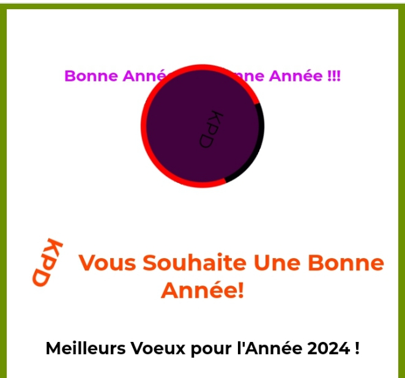

Portfolio
Voici quelques-uns de mes projets :
Projet 1
C'est une page web qui célèbre la nouvelle année. Elle comprend un texte changeant avec des animations de couleur, des vœux pour l'année 2024, des animations de vœux "Bonne Année" se déplaçant à différents endroits de la page, et un élément tournant avec le texte "KPD". Le contenu est stylisé avec des polices personnalisées et des animations CSS pour créer un effet visuel attractif. En bas de la page, il y a un pied de page avec des informations sur l'entité ou l'organisation à l'origine de la plateforme.
Voir le projet